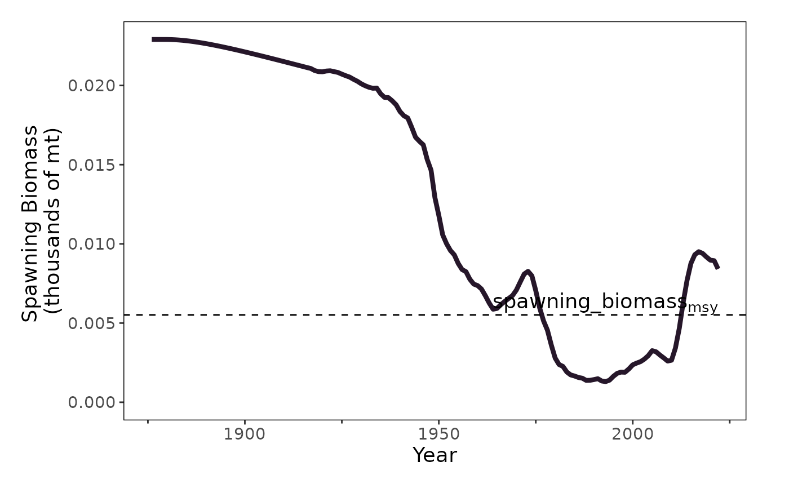
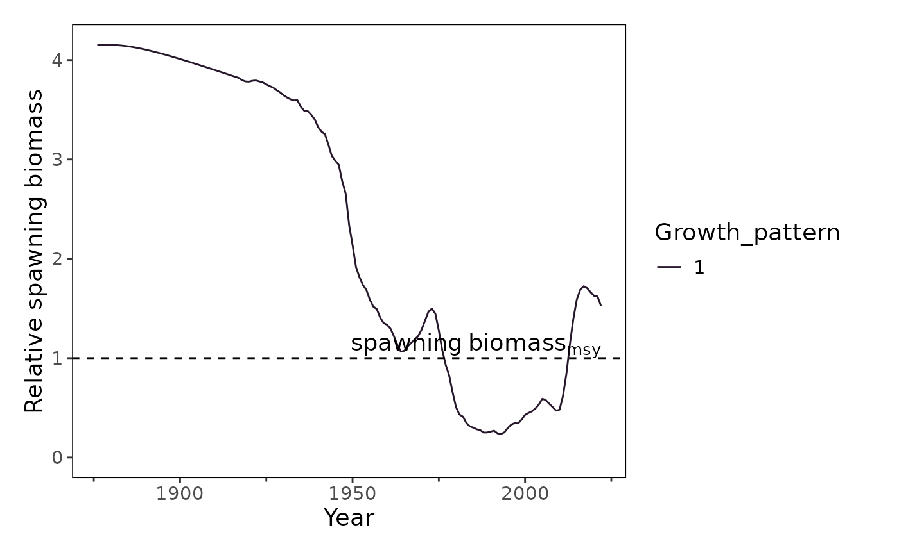

Plot spawning biomass with a reference line as a dashed line. The figure can also be made relative to this reference line rather than in absolute units.
plot_spawning_biomass(
dat,
geom = "line",
group = NULL,
facet = NULL,
ref_line = "msy",
unit_label = "metric tons",
era = "time",
module = NULL,
scale_amount = 1,
relative = FALSE,
make_rda = FALSE,
figures_dir = getwd(),
interactive = TRUE,
...
)A data frame or names list of data frames (input as `list()`) returned from convert_output. The first data frame in the list is used in calculation of a reference line if one is present
A string stating the geom used for the plot. Default is "line". Options include "line", "point", or "area"
a string of a single column that groups the data (e.g. "fleet", "sex", "area", etc.). Currently can only have one level of grouping. If you want to just summarize the data across all factors, set group = "none". In the case there is only one unique value of the grouping and/or NA is available, the function will default to the NAs and in some cases the grouping when there is not an equal number of rows for NA and the grouped data.
a string or vector of strings of a column that facets the data (e.g. "year", "area", etc.)
A string specifying the type of reference you want to compare spawning biomass to. The default is `"target"`, which looks for `"spawning_biomass_target"` in the `"label"` column of `dat`. The actual searching in `dat` is case agnostic and will work with either upper- or lower-case letters but you must use one of the options specified in the default list to ensure that the label on the figure looks correct regardless of how it is specified in `dat`.
units for spawning_biomass
a string naming the era of data such as historical ("early"), current ("time"), or projected ("fore") data if filtering should occur. Default is set to "time" which is the current time. To plot all data, set era to NULL.
(Optional) A string indicating the linked module_name associated with the label for the plot if known. Default is NULL. By default, the function will select the most relevant module if more than 1 exists.
A number describing how much to scale down the quantities shown on the y axis. For example, scale_amount = 100 would scale down a value from 500,000 –> 5,000. This scale will be reflected in the y axis label.
A logical value specifying if the resulting figures should be relative spawning biomass. The default is `FALSE`. `ref_line` indicates which reference point to use.
TRUE/FALSE; indicate whether to produce an .rda file containing a list with the figure/table, caption, and alternative text (if figure). If TRUE, the rda will be exported to the folder indicated in the argument "figures_dir". Default is FALSE.
The location of the folder containing the generated figure rda files ("figures") that will be created if the argument `make_rda` = TRUE. Default is the working directory.
TRUE/FALSE; indicate whether the environment in which the function is operating is interactive. This bypasses some options for filtering when preparing data for the plot. Default is FALSE.
Arguments called from ggplot2::geom_line or ggplot2::geom_point
Plot spawning biomass over time from the results of an assessment model translated to the a standardized output (convert_output). There are options to return a [ggplot2::ggplot()] object or export an rda object containing associated caption and alternative text for the figure.
plot_spawning_biomass(
dat = stockplotr:::example_data,
geom = "line",
ref_line = "msy",
unit_label = "mt",
scale_amount = 1000,
interactive = FALSE,
module = "TIME_SERIES",
linewidth = 1.5
)

plot_spawning_biomass(
dat = stockplotr:::example_data,
relative = TRUE,
ref_line = "msy",
module = "TIME_SERIES"
)
